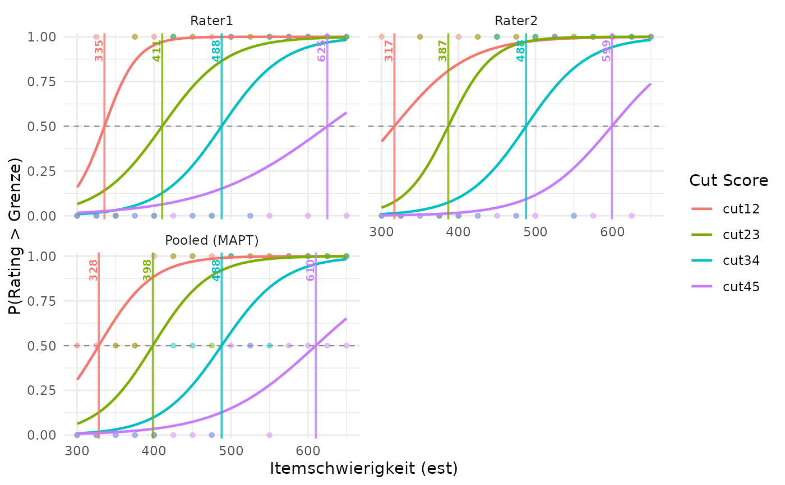

Compute IDM Cut Scores Using MAPT-Style Logistic Regressions
computeCutsIDMMAPT.RdFinds cut scores from item difficulties and raters' assignments of items to
ordered performance levels. A cut score is a position on the item-difficulty
scale, such as 500. For each boundary between levels, the function fits a
logistic curve to all available ratings together. The cut is where that curve
reaches probability 0.5. This provides a MAPT-style comparison with the
moving-average method in computeCutsIDM.
Usage
computeCutsIDMMAPT(
dat,
boundaries = c(1.5, 2.5, 3.5, 4.5),
est_col = "est",
item_id_col = NULL,
rater_cols = NULL,
rater_pattern = "Rater",
rater_id_col = NULL,
rating_col = NULL,
input_format = c("auto", "long", "wide"),
rating_levels = NULL,
missing = c("drop", "error"),
cut_labels = NULL,
per_rater = TRUE
)Arguments
- dat
A data frame with item difficulty estimates and ratings.
- boundaries
Boundaries on the rating-index scale, in increasing order. Use half-integers, for example
c(1.5, 2.5)for three levels. These numbers select which levels to separate; they are not item difficulties or the resulting cut scores. If omitted andrating_levelsis supplied, all adjacent boundaries are used. See the label example below.- est_col
Name of the numeric item-difficulty column. The returned cut scores use this same scale. All values must be finite and nonmissing.
- item_id_col
Name of the item identifier column. Required for long input; optional for wide input, where rows otherwise identify items.
- rater_cols
Names of the rating columns in wide input. If
NULL, they are selected usingrater_pattern.- rater_pattern
Regular expression used to select wide rating columns when
rater_colsisNULL.- rater_id_col
Name of the rater identifier column in long input.
- rating_col
Name of the rating column in long input.
- input_format
Input layout. Long input requires
item_id_col,rater_id_col, andrating_col. Wide input has one row per item and one column per rater."auto"infers the layout from the supplied column arguments.- rating_levels
Optional vector of rating labels, listed from lowest to highest level. For example,
c("1a", "1b", "2", "3", "4"). Their positions in this vector become indices1, ..., K, whereKis the number of levels. The supplied order determines the order used in the calculation. Without this argument, ratings must be numeric positive integer indices.- missing
"drop"(default) removes missing ratings and keeps the other ratings, including other raters' ratings of the same item."error"stops if a rating is missing. This option does not remove missing item difficulties or identifiers: these always cause an error.- cut_labels
Optional distinct, nonempty names for the requested cuts. Defaults to names such as
cut12without explicitrating_levels, orcut_1a_1bwith explicit category labels. The name"person"is reserved and cannot be used for a cut.- per_rater
TRUE(default) also computes separate models and cuts for each rater, to help compare raters.FALSEcomputes only the joint result. Either choice gives the same pooled cuts.
Details
1. Start with ordered ratings and item difficulties
Each observation is one rater's rating of one item. In long format, each observation has its own row. In wide format, each item has one row and each rater has a rating column. Each item must have the same difficulty wherever it occurs. An item–rater pair must occur at most once.
The function uses the order of the rating levels. With
rating_levels = c("1a", "1b", "2", "3", "4"), the mapping is:
| Rating label | Index used in the calculation |
1a | 1 |
1b | 2 |
2 | 3 |
3 | 4 |
4 | 5 |
For example, boundaries = 3.5 separates indices 3 and 4, so it
separates the labels "2" and "3". The resulting cut might
be 500 on the item-difficulty scale. The boundary 3.5 and the cut 500 are
different quantities.
2. Ask one yes-or-no question per boundary
For each boundary, ask: is this rating above the boundary? Code yes as 1
and no as 0. Let \(i\) identify an item, \(r\) a rater, and \(k\)
a requested boundary. Write \(R_{ir}\) for the rating index and
\(b_k\) for the boundary. The binary outcome is
$$Y_{irk} = \mathbf{1}(R_{ir} > b_k).$$
The symbol \(\mathbf{1}(\cdot)\) means 1 when the condition
is true and 0 otherwise. For the boundary between labels "2" and
"3", ratings "1a", "1b", and "2" give 0;
ratings "3" and "4" give 1.
A separate logistic curve is fitted for each boundary. It describes how the probability of a rating on the upper side changes with item difficulty: $$p_k(x) = \frac{1}{1 + \exp[-(\alpha_k + \beta_k x)]}.$$ Here, \(x\) is item difficulty, \(p_k(x)\) is the fitted probability, \(\alpha_k\) is the intercept, and \(\beta_k\) is the slope. The intercept and slope together determine the curve's position and steepness. The function \(\exp\) is the exponential function. A positive slope means that higher item difficulty goes with a higher probability of a rating above the boundary.
The equivalent logit equation, using the natural logarithm \(\log\), is $$\log\left(\frac{p_k(x)}{1-p_k(x)}\right) = \alpha_k + \beta_k x.$$ The coefficients are estimated by maximum likelihood: the fitted curve is chosen to best account for the observed zeros and ones under this model. This is a probability of a rating-level assignment. It is not the probability that a student answers the item correctly.
3. Find where the curve reaches 0.5
The cut \(c_k\) is the difficulty where the fitted probability is 0.5. At that point, the model gives equal probabilities to ratings on the two sides of the boundary. Since the logit of 0.5 is zero, $$p_k(c_k)=0.5 \quad\Longrightarrow\quad \alpha_k + \beta_k c_k = 0 \quad\Longrightarrow\quad c_k = -\frac{\alpha_k}{\beta_k}.$$ For example, an intercept of -10 and a slope of 0.02 give $$c = -\frac{-10}{0.02} = 500.$$ At difficulty 500, the fitted probability is 0.5. There need not be an item with exactly that difficulty, nor exactly half of the observed ratings on each side at that point. The cut comes from the fitted curve.
4. Keep pooled cuts and means of rater cuts separate
The main result is cuts_summary. It contains the cuts from
models fitted to all available item–rater observations together. This is
called pooling. Each observed rating has equal weight. A rater with more
observed ratings therefore contributes more observations; raters are not
first reduced to equally weighted summaries. There are no rater-specific
intercepts or slopes in the pooled model.
With per_rater = TRUE, the function also repeats the calculation for
each rater separately. These cuts are in cuts_per_person. A third
table, cuts_summary_per_person, contains their arithmetic means:
$$\bar c_k = \frac{1}{m_k}\sum_{r\in V_k} c_{rk}.$$
Here, \(c_{rk}\) is rater \(r\)'s cut for boundary \(k\), \(V_k\)
is the set of raters with a finite cut for that boundary, and \(m_k\)
is their number. If none is available, the mean is NA.
For example, rater cuts of 480 and 520 have mean 500. The pooled model must
still be fitted to the ratings; its cut need not be 500. Fitting a joint
curve and averaging separately estimated cuts are different calculations.
The mean table is provided for comparison and does not determine
cuts_summary.
Use plotCutsIDM(result, show_aggregate = TRUE) to show individual
raters and the joint model. The Pooled (MAPT) panel uses
cuts_summary. With per_rater = FALSE, the plot shows only
that pooled panel, even when show_aggregate = FALSE.
5. Read the diagnostics before interpreting a cut
Start with cut_diagnostics. Its status column explains whether
a usable cut was obtained. NA means that no usable cut is available;
it does not mean a cut of zero. The corresponding rater information is in
diagnostics_per_person.
okA finite cut from a converged, increasing curve is available. Also check
extrapolatedandwarning.no_dataNo observed ratings remain for this rater.
one_classAll available ratings are on the same side of this boundary.
constant_estAll available item difficulties are identical.
separationThe difficulty ranges of the zero and one outcomes do not overlap, or only meet at an endpoint. Ordinary logistic regression then has no finite maximum-likelihood slope for this boundary.
nonpositive_slopeThe fitted curve decreases or is numerically too flat to supply an acceptable increasing-curve cut.
fit_error,non_convergence,non_finiteThe fit failed, did not converge to an acceptable solution, or produced non-finite numerical results. Read the
warningcolumn for any further details.
All statuses other than ok give an NA cut. Some diagnostics
can also be NA when fitting stopped early.
Extrapolation: a finite cut outside the observed difficulty range
is retained, with extrapolated = TRUE. For example, a cut of 700 with
items only between 300 and 650 extends beyond the observed items. Treat it
more cautiously than a cut within that range.
Order: each boundary has its own model, so the resulting cuts can
cross or coincide. cuts_ordered is TRUE only when all pooled
cuts are strictly increasing in boundary order. It is FALSE when
all are available but not strictly increasing, and NA when any is
unavailable. The function does not rearrange cuts to hide this problem.
6. What the calculation does and does not guarantee
This implements the logistic calculation in the MAPT Technical Manual (2006, pp. 54–55). It omits the report's two-pass removal of unusual ratings, so that methods can be compared using unchanged ratings. Each boundary has its own intercept and slope; this is not a proportional-odds model, which would share a slope across boundaries.
No moving average or isotonic regression is applied. Different items may have equal difficulties; there is no need to put tied items in an arbitrary order. This removes that source of order dependence, but it does not make every cut stable. Changed difficulties or ratings can still change a cut; in particular, a shallow curve makes its 0.5 crossing sensitive to changes.
No confidence intervals for cuts are provided. Ordinary standard errors
in the stored glm objects do not account for dependence between
ratings of the same item or ratings by the same rater. They also do not
account for uncertainty in the estimated item difficulties.
Technical note: the scale in stored model objects
For numerical stability, the predictor inside each stored model is
$$z = \frac{x-\mu}{s},$$
where \(\mu\) is the mean difficulty and \(s\) is its sample standard
deviation over that model's observed rating rows. The model stores these as
est_center and est_scale; its predictor column is called
difficulty. Thus, predicting from a stored model requires standardized
values, not raw est values. The reported diagnostic intercept,
slope, and all cut tables are already on the original difficulty
scale used in the formulas above. You can use these tables directly.
Value
A list of class cutsIDMMAPT with the following components:
- cuts_summary
The main result: a one-row table (tibble) of pooled cuts, with one column per boundary, on the original item-difficulty scale.
- cuts_per_person
Auxiliary rater-specific cuts, or
NULLwhenper_rater = FALSE.- cuts_summary_per_person
Arithmetic means of the finite rater-specific cuts, distinct from the pooled result. Unavailable cuts are excluded; a mean is
NAif no finite individual cut is available.NULLwhenper_rater = FALSE.- cut_diagnostics
One row per pooled boundary.
cut_name,boundary, andcutidentify the requested boundary and resulting cut.ncounts rating observations, not unique items;n_lowerandn_uppercount the zero and one outcomes.interceptandslopeare the coefficients on the original difficulty scale.min_estandmax_estgive the observed range.status,extrapolated,converged, andwarningdescribe fit quality and problems.est_centerandest_scalerecord the numerical standardization described above.- diagnostics_per_person
Diagnostics for each rater, or
NULLwhenper_rater = FALSE.- models
Named list of pooled
glmfits; entries may beNULLwhen a model cannot be fitted.- models_per_person
Named list of raters, each containing a list of
glmfits named by cut. Entries may beNULLwhen a model cannot be fitted. The whole component isNULLwhenper_rater = FALSE.- data_used
Long-format data used in the models, with columns
item_id,person,est,stage_raw, andstage_label.- n_dropped
Number of missing rating observations removed. For wide input this counts missing rating cells; for long input it counts supplied rows with missing ratings.
- boundaries, rating_levels, cut_labels, input_format, est_col, item_id_col, rater_id_col, rating_col, missing, method
Settings describing the calculation, input columns, and missing-rating policy.
- cuts_ordered
Whether all pooled cuts are strictly increasing in boundary order;
NAif any pooled cut is unavailable.
References
Massachusetts Adult Proficiency Tests (MAPT): Technical Manual (2006), pp. 54–55. https://bpb-us-e2.wpmucdn.com/websites.umass.edu/dist/5/40195/files/2021/03/MAPT_TechnicalManualv1.pdf
Examples
# Ratings overlap along the difficulty scale, avoiding perfect separation.
dat <- data.frame(
item = paste0("I", 1:15),
est = seq(300, 650, length.out = 15),
Rater1 = c(1, 2, 1, 3, 2, 4, 3, 2, 5, 3, 4, 5, 4, 5, 4),
Rater2 = c(2, 1, 3, 1, 2, 3, 4, 3, 4, 5, 3, 4, 5, 4, 5)
)
mapt <- computeCutsIDMMAPT(dat, item_id_col = "item")
print(mapt)
#> MAPT pooled binary logistic cuts (no rating trimming)
#> 30 ratings from 2 raters on 15 items; 0 missing ratings dropped.
#>
#> Pooled cuts (all raters fitted together):
#> cut_name cut status extrapolated
#> cut12 328.096 ok FALSE
#> cut23 398.356 ok FALSE
#> cut34 487.736 ok FALSE
#> cut45 610.108 ok FALSE
#>
#> No flagged fits.
#> Extrapolated = cut outside the observed item difficulty range.
#> Individual cuts: summary(x, per_rater = TRUE).
#> Models and ratings remain in the original result: $models, $models_per_person, $data_used.
summary(mapt, per_rater = TRUE)
#> MAPT pooled binary logistic cuts (no rating trimming)
#> 30 ratings from 2 raters on 15 items; 0 missing ratings dropped.
#>
#> Pooled cuts (all raters fitted together):
#> cut_name cut status extrapolated
#> cut12 328.096 ok FALSE
#> cut23 398.356 ok FALSE
#> cut34 487.736 ok FALSE
#> cut45 610.108 ok FALSE
#>
#> No flagged fits.
#> Extrapolated = cut outside the observed item difficulty range.
#>
#> Individual rater cuts (comparison results):
#> person cut12 cut23 cut34 cut45
#> Rater1 335.468 410.511 487.736 625.158
#> Rater2 316.552 386.667 487.736 599.188
#> Models and ratings remain in the original result: $models, $models_per_person, $data_used.
# Main result: use the ratings from both raters together.
mapt$cuts_summary
#> # A tibble: 1 × 4
#> cut12 cut23 cut34 cut45
#> <dbl> <dbl> <dbl> <dbl>
#> 1 328. 398. 488. 610.
mapt$cut_diagnostics[c("cut_name", "cut", "status", "extrapolated")]
#> # A tibble: 4 × 4
#> cut_name cut status extrapolated
#> <chr> <dbl> <chr> <lgl>
#> 1 cut12 328. ok FALSE
#> 2 cut23 398. ok FALSE
#> 3 cut34 488. ok FALSE
#> 4 cut45 610. ok FALSE
# Two different comparison results: individual cuts and their means.
mapt$cuts_per_person
#> # A tibble: 2 × 5
#> person cut12 cut23 cut34 cut45
#> <chr> <dbl> <dbl> <dbl> <dbl>
#> 1 Rater1 335. 411. 488. 625.
#> 2 Rater2 317. 387. 488. 599.
mapt$cuts_summary_per_person
#> # A tibble: 1 × 4
#> cut12 cut23 cut34 cut45
#> <dbl> <dbl> <dbl> <dbl>
#> 1 326. 399. 488. 612.
plotCutsIDM(mapt, show_aggregate = TRUE)

# A hand calculation for an illustrative curve, not the fitted data above:
alpha <- -10
beta <- 0.02
cut <- -alpha / beta # 500
1 / (1 + exp(-(alpha + beta * cut))) # 0.5
#> [1] 0.5
# Compare the same ratings using the moving-average method.
old <- computeCutsIDM(dat)
data.frame(
method = c("moving_average", "logistic"),
rbind(old$cuts_summary, mapt$cuts_summary)
)
#> method cut12 cut23 cut34 cut45
#> 1 moving_average 319.7917 400.0000 484.3750 606.2500
#> 2 logistic 328.0959 398.3559 487.7358 610.1084
# A complete long-format example with labels 1a, 1b, 2, 3, 4.
level_labels <- c("1a", "1b", "2", "3", "4")
dat_long <- tidyr::pivot_longer(
dat, cols = c("Rater1", "Rater2"),
names_to = "Name", values_to = "Kategorie"
)
dat_long$Kategorie <- level_labels[dat_long$Kategorie]
labelled <- computeCutsIDMMAPT(
dat_long, item_id_col = "item", est_col = "est",
rater_id_col = "Name", rating_col = "Kategorie", input_format = "long",
rating_levels = level_labels, missing = "drop"
)
labelled$cuts_summary
#> # A tibble: 1 × 4
#> cut_1a_1b cut_1b_2 cut_2_3 cut_3_4
#> <dbl> <dbl> <dbl> <dbl>
#> 1 328. 398. 488. 610.
plotCutsIDM(labelled, show_aggregate = TRUE)
 # Just the boundary between labels "2" and "3" (indices 3 and 4).
one_boundary <- computeCutsIDMMAPT(
dat_long, item_id_col = "item", rater_id_col = "Name",
rating_col = "Kategorie", input_format = "long",
rating_levels = level_labels, boundaries = 3.5, per_rater = FALSE
)
one_boundary$cuts_summary
#> # A tibble: 1 × 1
#> cut_2_3
#> <dbl>
#> 1 488.
# Just the boundary between labels "2" and "3" (indices 3 and 4).
one_boundary <- computeCutsIDMMAPT(
dat_long, item_id_col = "item", rater_id_col = "Name",
rating_col = "Kategorie", input_format = "long",
rating_levels = level_labels, boundaries = 3.5, per_rater = FALSE
)
one_boundary$cuts_summary
#> # A tibble: 1 × 1
#> cut_2_3
#> <dbl>
#> 1 488.